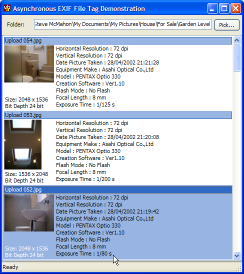

EXIF Tags (54K)
EXIF Tags (54K)
 28 Mar 2003
28 Mar 2003
First Posted

Reading EXIF Tags From JPEG Files
Many digital cameras record information about when and how a picture was taken using the EXIF format (which is slowly becoming the DCF format under ISO). You can read and write this information using classes within the System.Drawing namespace, but the .NET library doesn't provide as much as you would like to help you do it.
This article provides a sample application demonstrating how to parse the most popular EXIF tags and populate the data using a background threads, and provides links to resources with more details on the EXIF codes.
About EXIF Tags
EXIF tags are an extension of the JPEG format used to store particular information about the make and model of a camera, when a picture was taken and digitised, information about the resolution of the image and things like the exposure time, focal length and whether a flash was used to take the photo.
if you're interested in the details of EXIF then read TsuruZoh Tachibanaya's Description of Exif file format which goes through most of the EXIF tags and exactly how they are stored.
The System.Drawing.Imaging provides a PropertyItem class which contains the meta-data associated with an image (incidentally this covers all types of image meta-data, and not just EXIF, so you can also use it to investigate information stored in TIF and PNG files too). However, if you take a look you'll see you don't get very much - here's the definition of PropertyItem:
public sealed class PropertyItem : System.Object
{
public int Id [get, set]
public int Len [get, set]
public short Type [get, set]
public byte[] Value [get, set]
}
Hmmm. What are the values of Id? How about Type? The documentation is nice and terse on these subjects (for example, Len "Gets or sets the length of the property.)
If you take a look at the the Platform SDK in GDIPlusImaging.h you'll see that the Type and Id values have associated constants (PropertyTagType.. and PropertyTag.. values), but these don't appear to have made it in to the .NET version. The code presented with this article provides an EXIFPropertyItem class which provides the enumerations you need, plus helper methods for decoding the data in the opaque Value property.
Getting At An Image's EXIF Tags
To actually get the EXIF data for an image, you use the PropertyIdList property of the Image object. The code for this in the download is in the constructor of the EXIFListBoxItem class, and looks like this:
int[] propIds = img.PropertyIdList;
foreach( int id in propIds )
{
try
{
PropertyItem prop = img.GetPropertyItem(id);
// now use the property item:
EXIFPropertyItem exifProp = new EXIFPropertyItem(prop);
this.InnerList.Add(exifProp);
}
catch
{
// can't read this property
}
}
Having got at the property items, you then want to be able to find out what the item represents and decode the data stored by it. This work is assisted by the EXIFPropertyItem class, which contains a documented enumeration of EXIF Code ID values in KnownEXIFCodes and an enumeration of their types in EXIFPropertyTypes. In addition, it provides some helper methods to assist you in parsing the data. To understand the types of parsing which are done, first we'll look at the different types of data stored within EXIF tags.
The list of the twelve different EXIF property types is given below:
public enum EXIFPropertyTypes
{
///
/// Data contains unsigned bytes
///
ExifTypeUnsignedByte = 1,
///
/// Data contains a string
///
ExifTypeString = 2,
///
/// Data contains unsigned 2-byte values
///
ExifTypeUnsignedChar = 3,
///
/// Data contains unsigned 4-byte values
///
ExifTypeUnsignedInt = 4,
///
/// Data is fractional: each item in the data is 8 bytes long.
/// The first 4 bytes of each item in the data contain the
/// numerator (unsigned int), the second 4 bytes the denominator
/// (also unsigned int).
///
ExifTypeUnsignedRational = 5,
///
/// Data contains signed bytes
///
ExifTypeSignedByte = 6,
///
/// Data has arbitrary data type, tag specific
///
ExifTypeUndefined = 7,
///
/// Data contains signed 2-byte values
///
ExifTypeSignedChar = 8,
///
/// Data contains signed 4-byte values
///
ExifTypeSignedInt = 9,
///
/// Data is fractional: each item in the data is 8 bytes long.
/// The first 4 bytes of each item in the data contain the
/// numerator (signed int), the second 4 bytes the denominator
/// (also signed int).
///
ExifTypeSignedRational = 10,
///
/// Data contains 4-byte floating point values
///
ExifTypeFloat = 11,
///
/// Data contains 8-byte floating point values
///
ExifTypeDouble = 12
}
For each type, the PropertyItem may contain zero, one or more values, depending on the tag type. For example, the EXIF Manufacturer tag consists of a string of ASCII bytes containing the manufacturer's name, whereas the Orientation tag is a single short integer value with one of eight values representing the orientation of the camera when the picture was taken.
Examining a typical EXIF file, you see that almost all of the values of interest have either ASCII or 4 byte rational types. So the EXIFPropertyItem class provides methods to parse them. Its typically not difficult to parse any of the other types either: the Marshal class within the System.Runtime.InteropServices namespace provides a host of ways of manipulating bytes; likewise you could construct a MemoryReader instance on the byte data to convert the information.
Here are the functions used to parse strings and rational values:
public string ParsedString
{
get
{
string parsed = "";
if (this.data.Length > 1)
{
IntPtr h = Marshal.AllocHGlobal(this.data.Length);
int i = 0;
foreach (byte b in this.data)
{
Marshal.WriteByte(h, i, b);
i++;
}
parsed = Marshal.PtrToStringAnsi(h);
Marshal.FreeHGlobal(h);
}
return parsed;
}
}
public EXIFRational[] ParsedRationalArray
{
get
{
EXIFRational[] parsed = null;
int arraySize = (this.data.Length / 8);
if (arraySize > 0)
{
parsed = new EXIFRational[arraySize];
for (int i = 0; i < arraySize; i++)
{
parsed[i] = new EXIFRational(this.data, i * 8);
}
}
return parsed;
}
}
Where the EXIFRational structure is defined:
////// A structure containing an EXIFRational value /// public struct EXIFRational { ////// /// public int Denominator; public int Numerator; ////// Creates an EXIFRational object from EXIF byte data, /// starting at the byte specified by ofs /// /// EXIF byte data /// Initial Byte public EXIFRational(byte[] data, int ofs) { Denominator = 0; Numerator = 0; if (data.Length >= ofs + 8) { Numerator = data[ofs]; Numerator |= (data[ofs + 1] >> 8); Numerator |= (data[ofs + 2] >> 16); Numerator |= (data[ofs + 3] >> 24); Denominator = data[ofs + 4]; Denominator |= (data[ofs + 5] >> 8); Denominator |= (data[ofs + 6] >> 16); Denominator |= (data[ofs + 7] >> 24); } } ////// Returns the value of the fraction as a string /// ///The value of the fraction as a string public override string ToString() { string ret; if (this.Denominator == 0) { ret = "N/A"; } else { ret = String.Format("{0:F2}", this.Numerator * 1.0/this.Denominator); } return ret; } }
A Practical Example
An example of using this code would be to output the horizontal and vertical resolution of an image with EXIF tags. Referring to the KnownEXIFIDCodes enumeration, or the EXIF documentation referred to earlier, we see that the resolution is encoded in EXIF items with the following IDs:
////// Display/Print resolution of image. Default value is 1/72inch. /// unsigned rational 1 /// XResolution = 0x011a, ////// Display/Print resolution of image. Default value is 1/72inch. /// unsigned rational 1 /// YResolution = 0x011b, ////// Unit of XResolution(0x011a)/YResolution(0x011b). /// '1' means no-unit, '2' means inch, '3' means centimeter. /// Default value is '2'(inch). /// unsigned short 1 /// ResolutionUnit = 0x0128,
This code will take an image, read all of the PropertyItems, and if it finds the appropriate value write out the resolution:
Image img = new Image(@"C:\My Pictures\Summer\Lager1.jpg");
// Get the resolution unit:
string resUnit = "dpi";
try
{
PropertyItem prop = img.GetPropertyItem((int)KnownEXIFIDCodes.ResolutionUnit);
switch (prop.Value[0])
{
case 1:
resUnit = "n/a";
break;
case 2:
resUnit = "dpi";
break;
case 3:
resUnit = "dpcm";
break;
}
}
catch {}
// Now get the horizontal resolution:
string horzRes = "1/72";
try
{
PropertyItem prop = img.GetPropertyItem((int)KnownEXIFIDCodes.XResolution);
EXIFPropertyItem exifProp = new EXIFPropertyItem(prop);
EXIFRational[] xRes = exifProp.ParsedRationalArray;
horzRes = xRes[0].ToString();
}
catch {}
// repeat for vertical:
string vertRes = "1/72";
try
{
PropertyItem prop = img.GetPropertyItem((int)KnownEXIFIDCodes.YResolution);
EXIFPropertyItem exifProp = new EXIFPropertyItem(prop);
EXIFRational yRes = exifProp.ParsedRationalArray;
vertRes = yRes[0].ToString();
}
catch {}
Console.WriteLine("The resolution of the image is {0} {1} x {2} {3}",
horzRes, resUnit, vertRes, resUnit);
The Demonstration Application
The demonstration application wraps up all of these techniques to provide a thumbnail viewer with tag information based on a ListBox. Since digital camera images can often be large, the sample uses a background thread to read images, create the thumbnail and evaluate the tags. Just point it to a directory containing images and it will start populating the list.
The threading model used in the sample is the "fire and forget" type. Images are processed one at a time in this case (it would be nicer to use the Explorer model to do this, with multiple background threads working at once, but doing that increases complexity somewhat). Requested images are added to a Stack, and this is popped whenever the background thread completes (or is idle). A job id is then assigned to the Image reading task. This allows the code to effectively cancel a job at the user's request, since it simply ignores any results from a job id it has given up on. This is a simple way of avoiding the thorny issue of job cancellation and seems reasonable in this case since at worst the job of converting an image takes no more than a few seconds, so it isn't going to hang around for ever on the machine.
The process of reading the image is then started on the background thread using BeginInvoke. One of the rules of threading in a UI is that a background thread must never attempt to invoke any methods or properties of objects in the UI thread directly. Instead, completion is notified through ControlInvoke, which performs the locking and marshalling needed to safely interact with the UI thread. Similar to starting the background image reading, this is a achieved by calling BeginInvoke on a delegate owned by the UI thread. Finally, once the results are in an item is added to the Owner-Draw ListBox in the same which renders the filename as a tile, draws the thumbnail and then lists the primary EXIF tags down the right-hand side.